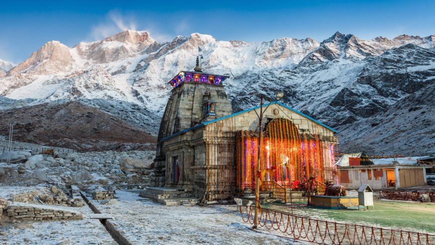
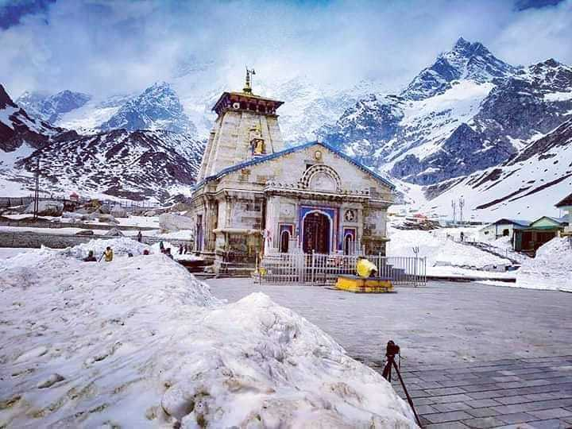
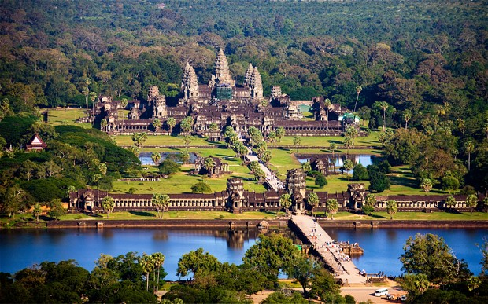

1. Kedarnath Temple,India.
Kedarnath is a town in the Indian state of Uttarakhand and has gained importance because of Kedarnath Temple. It is a nagar panchayat in Rudraprayag district.
The most remote of the four Chota Char Dham sites, Kedarnath is located in the Himalayas, about 3,583 m (11,755 ft) above sea level near Chorabari Glacier, the head of river Mandakini,
and is flanked by snow-capped peaks, most prominently Kedarnath mountain. The nearest road head is at Gaurikund.
The presiding image of Kedarnath in the form of lingam is of irregular shape with a pedestal 3.6 m (12 ft) in circumference and 3.6 m (12 ft) in height.
There is a small pillared hall in front of the temple, that has images of Parvathi and of the five Pandava princes. There are five temples around namely Badari-kear, Madhya Maheswara, Tunganatha,
Rudranatha and Kallesvara.The first hall inside Kedarnath Temple contains statues of the five Pandava brothers, Lord Krishna, Nandi, the vehicle of Shiva and Virabhadra,
one of the guards of Shiva. Statue of Draupadi and other deities are also installed in the main hall.An unusual feature of the temple is the head of a man carved in the triangular stone fascia.


2. Angkor-Wat Temple,Cambodia.
Angkor Wat is a Hindu temple complex in Cambodia and is the largest religious monument in the world, on a site measuring 162.6 hectares (1,626,000 m2; 402 acres).Originally constructed as a
Hindu temple dedicated to the god Vishnu for the Khmer Empire, it was gradually transformed into a Buddhist temple towards the end of the 12th century.It was built by the Khmer King Suryavarman II
in the early 12th century in Yaśodharapura, the capital of the Khmer Empire, as his state temple and eventual mausoleum.
Breaking from the Shaiva tradition of previous kings, Angkor Wat was instead dedicated to Vishnu. As the best-preserved temple at the site, it is the only one to have remained a significant
religious centre since its foundation. The temple is at the top of the high classical style of Khmer architecture. It has become a symbol of Cambodia,appearing on its national flag,
and it is the country's prime attraction for visitors.Angkor Wat combines two basic plans of Khmer temple architecture: the temple-mountain and the later galleried temple. It is designed to represent
Mount Meru, home of the devas in Hindu mythology: within a moat more than 5 kilometres (3 mi) long and an outer wall 3.6 kilometres (2.2 mi) long are three rectangular galleries, each raised above the next.
At the centre of the temple stands a quincunx of towers. Unlike most Angkorian temples, Angkor Wat is oriented to the west; scholars are divided as to the significance of this.
The temple is admired for the grandeur and harmony of the architecture, its extensive bas-reliefs, and for the numerous devatas adorning its walls.

